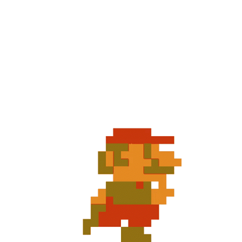
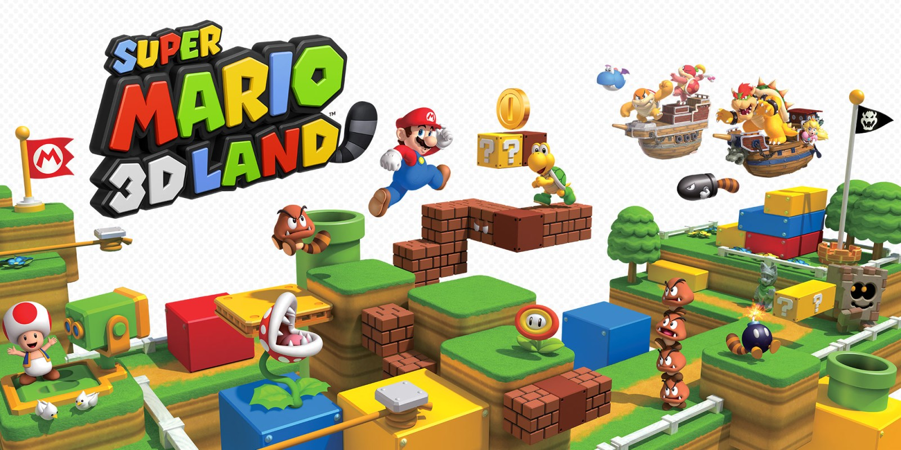
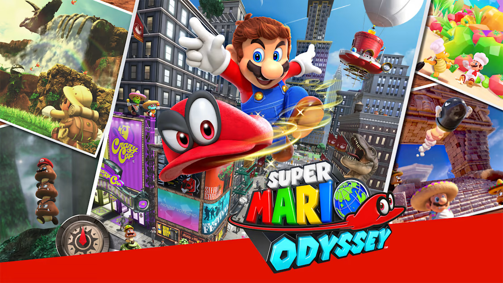
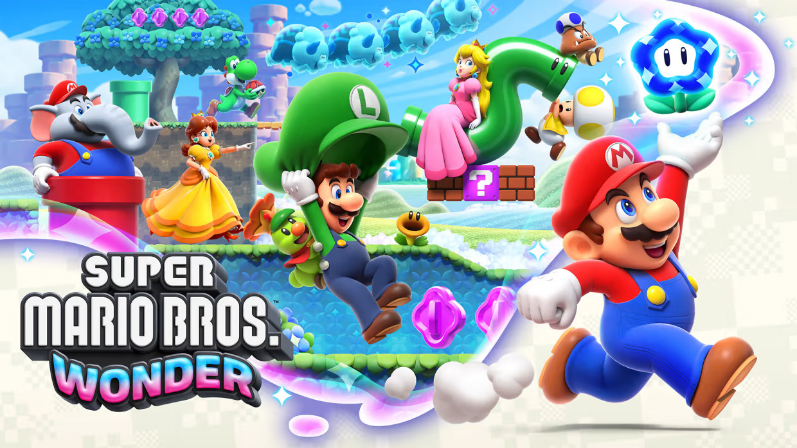

Super Mario Bros. (1985)


One day the kingdom of the peaceful mushroom people was invaded by the Koopa,
a tribe of turtles famous for their black magic. The quiet, peace-loving Mushroom
People were turned into mere stones, bricks and even field horsehair plants, and the
Mushroom Kingdom fell into ruin.
The only one who can undo the magic spell on the
Mushroom People and return them to their normal selves is the Princess Toadstool, the daughter
of the Mushroom King. Unfortunately, she is presently in the hands of Bowser, the King of the Koopa.
Super Mario Bros. 3 (1990)

The Mushroom Kingdom has been a peaceful place thanks to the brave deeds of Mario and Luigi. The Mushroom Kingdom forms an entrance to the Mushroom World where all is not well. Bowser has sent his 7 children to make mischief as they please in the normally peaceful Mushroom World.
Super Mario 64 (1996)

“Mario, please come to the castle. I've baked a cake for you. Yours truly, Princess Toadstool.”
“Wow, an invitation from Peach! I'll head out right away. I hope she can wait for me!”
Mario is so excited to receive the invitation from the princess, who lives in the
Mushroom Castle that he quickly dresses in his best and leaves right away.
Super Mario Galaxy (2007)

Every hundred years, a huge comet flies by in the skies above the Mushroom Kingdom. One year, that comet filled the entire sky, and from it fell a stream of shooting stars. The Toads scooped up the Star Bits and brought them to the castle, where they were reborn as a great Power Star. It was a happy time in the Mushroom Kingdom. Then one night Mario received a letter...
Super Mario 3D Land (2011)

In the Mushroom Kingdom, there stands a mysterious tree. It has a branch in the
shape of a tail and is known as the Tail Tree. One night, a fierce storm assails the
Mushroom Kingdom. Worried for the Tail Tree, Princess Peach goes to check on it, but
when morning arrives, she has yet to return.
Accompanied by Toads, Mario rushes to the Tail Tree only to find its leaves are gone.
All that remains is the bare Tail Tree and an envelope.
Super Mario 3D World (2013)

During an evening celebration, Mario and friends find a sparkling Pipe outside Princess Peach's Castle. Curious, they peek inside…and discover a fairy kingdom! Bowser has captured the Sprixie Princesses, so Mario and friends begin a new adventure!
Super Mario Odyssey (2017)

Explore incredible places far from the Mushroom Kingdom as you join Mario and his new ally Cappy on a massive, globe-trotting 3D adventure. Use amazing new abilities—like the power to capture and control objects, animals, and enemies—to collect Power Moons so you can power up the Odyssey airship and save Princess Peach from Bowser's wedding plans!
Super Mario Maker 2 (2019)
Dive into the single-player Story Mode and play built-in courses to rebuild Princess Peach's castle. Make your own courses, alone or together. And with a Nintendo Switch Online membership, share your courses, access a near-endless supply made by others, enjoy online multiplayer, and more!

Super Mario Bros. Wonder (2023)

Mario, Luigi, Princess Peach, Princess Daisy and an entourage of Toads and Yoshis are invited to the neighboring Flower Kingdom by its ruler, Prince Florian, to see a demonstration of a Wonder Flower; great treasures of the Flower Kingdom that can warp reality.